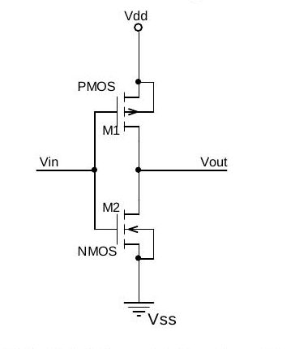
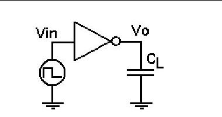
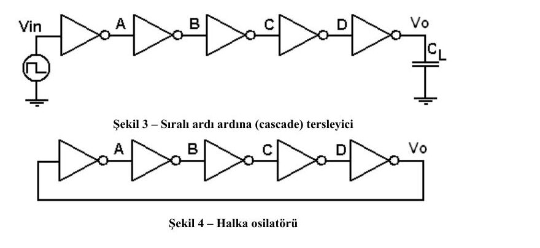
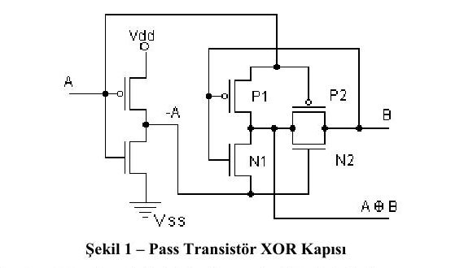

· EEM312
EEM312 Digital Electronics: Software Laboratory Handouts Y4–Y8 (Ring Oscillator, Power, Logic Gates)
EEM312 – Sayısal Elektronik · 12.03.2011 · 16.10.2026
This post contains the second half of the software laboratory handouts for the Başkent University Electrical and Electronics Engineering course EEM 312 – Digital Electronics: Y4 (ring oscillator and the regenerative property of the inverter), Y5 (static and dynamic power), Y6 (logic gate design), and Y8, a version of the same topic given with three-input gates. The Y4–Y6 handouts are dated March 2011 (laboratory supervisors: Research Assistants Numan Yavuz and Evren Emekdaş); the Y8 handout is a separate revision with no date on it. All experiments were carried out with WinSPICE (Spice3). The original PDFs of the handouts can be downloaded as a ZIP at the end of the post.
The same Level 2 MOSFET models are used in Y4, Y5 and Y6 (and Y8 uses them as well):
.MODEL MOSN NMOS LEVEL=2 LD=0.15U TOX=200.0E-10
+ NSUB=5.36726E+15 VTO=0.743469 KP=8.00059E-05 GAMMA=0.543
+ PHI=0.6 U0=655.881 UEXP=0.157282 UCRIT=31443.8
+ DELTA=2.39824 VMAX=55260.9 XJ=0.25U LAMBDA=0.0367072
+ NFS=1E+12 NEFF=1.001 NSS=1E+11 TPG=1.0 RSH=70.00
+ CGDO=4.3E-10 CGSO=4.3E-10 CJ=0.0003 MJ=0.6585
+ CJSW=8.0E-10 MJSW=0.2402 PB=0.58
.MODEL MOSP PMOS LEVEL=2 LD=0.15U TOX=200.0E-10
+ NSUB=4.3318E+15 VTO=-0.738861 KP=2.70E-05 GAMMA=0.58
+ PHI=0.6 U0=261.977 UEXP=0.323932 UCRIT=65719.8
+ DELTA=1.79192 VMAX=25694 XJ=0.25U LAMBDA=0.0612279
+ NFS=1E+12 NEFF=1.001 NSS=1E+11 TPG=-1.0 RSH=120.6
+ CGDO=4.3E-10 CGSO=4.3E-10 CJ=0.0005 MJ=0.5052
+ CJSW=1.349E-10 MJSW=0.2417 PB=0.64Y4: Ring Oscillator and the Regenerative Property of the Inverter
Item 1. Write the netlist of the CMOS inverter in Figure 1 as a subcircuit, as in the example below. For the PMOS, L/W = 1.2u/5.4u; for the NMOS, 1.2u/1.8u; supply 3.2 V.

.subckt inverter 1 2
* 1=input 2=output
* Subcircuit definition
vdd 3 0 3.2V
...
.endsItem 2. Using this subcircuit, build the test circuit in Figure 2 and check that it works correctly.

| Parameter | Value / application |
|---|---|
| Vin | Pulse (0 3.2 0 1n 1n 100n 200n) |
| Inverter | The defined subcircuit |
| C_L | 0.1p |
| Analysis type | Transient analysis |
| Plots to obtain | Vo(t) and Vin(t) |
| Values to measure | t_pHL, t_pLH and t_d |
Example of subcircuit usage:
.subckt alt_devre 3 9 12 5
...
.ends
...
x1 2 1 3 4 alt_devre
x2 5 4 1 0 alt_devre
...Item 3. Using the same subcircuit, create the netlists of Figure 3 (a chain of five inverters) and Figure 4 (the ring oscillator), and run the simulations in Table 4.

| Circuit | Analysis | Plots and parameters | Questions |
|---|---|---|---|
| Figure 3 | DC analysis | Vin – A, B, C, Vo (VTC) | What changes when Vin–A, Vin–B, Vin–C and Vin–Vo are compared, and why? Is the circuit regenerative? |
| Figure 3 | Transient | Vin(t), A(t), B(t), C(t), D(t), Vo(t); Vin = Pulse (0 3.2 0 1n 1n 100n 200n) | Measure the delays for A, B, C and Vo. |
| Figure 3 | Transient | Same plots; Vin = SIN(VO VA FREQ TD THETA) = SIN(1.6 1 5e6 0 0) | Explain the function of the circuit by looking at A, B, C and Vo. |
| Figure 4 | Transient | A(t), B(t), C(t), D(t), Vo(t) | Obtain only Vo(t) and comment on how it arises. What is its frequency? What differs among the A, B, C signals? |
| Figure 4 | Transient | Vo(t); 100 fF load on each inverter | Same questions, for the loaded case. |
A ring made of an odd number of inverters (here 5) has no stable operating point and oscillates on its own; the oscillation period is approximately T = 2·N·t_p (N is the number of inverters, t_p is the propagation delay of a single stage). Adding a load to each stage increases t_p and therefore the period.
Y5: Static and Dynamic Power
Item 1. Create the netlist of the CMOS inverter from Y4 (PMOS 1.2u/5.4u, NMOS 1.2u/1.8u) and run the simulations in Table 2.
| Analysis and parameters | Questions |
|---|---|
| DC analysis, Vdd = 0–5 V | Obtain the static power dissipated by the circuit as a function of the input voltage for different Vdd values; where does it reach its maximum? What is the effect of Vdd (give ratios)? |
| Transient: C_L = 0.1p, Per = 200n, Vdd = 5 V and C_L = 0.1p, Per = 100n, Vdd = 5 V | In which case is the peak power during switching highest? What is the average power? How does the ratio of the average powers change? |
| Transient: C_L = 0.2p, Per = 100n, Vdd = 5 V and C_L = 0.2p, Per = 100n, Vdd = 3 V | What is the average power? How does the ratio change? |
| Transient: C_L = 0.1p, Per = 100n, Vdd = 5 V and C_L = 0.2p, Per = 100n, Vdd = 5 V | What is the average power? How does the ratio change? |
The expected relationships can be read from the dynamic power formula: P_dyn = C_L · V_dd² · f. Doubling the frequency (Per 200n → 100n) or doubling C_L approximately doubles the power; lowering V_dd from 5 V to 3 V reduces the power to approximately (3/5)² = 0.36 times its value.
Item 2. For the same circuit, run transient analyses for Vdd = 1, 1.5, 2, 2.5, 3, 4 and 5 V (C_L = 0.1p, Per = 100n):
- Find the average power consumption for each Vdd.
- Find the delay time and calculate the power-delay product (PDP).
- Roughly plot PDP against Vdd; at which value is the performance best?
- How would the results be affected if the MOSFETs were short-channel devices?
Y6: Logic Gate Design
Preliminary Work
- Write the netlist of the pass-transistor XOR gate in Figure 1 and explain how it works; indicate the drain and source terminals of each transistor.
- Design a two-input CMOS NAND gate with the minimum number of transistors and write its netlist.
- Design a two-input CMOS NOR gate with the minimum number of transistors and write its netlist.

Laboratory Work
- Verify the logical functions of the gates you designed by testing them in Spice with the necessary input signals and the model parameters above.
- Find the worst-case delays of the gates, compare them, and identify the gate with the lowest delay.
In static CMOS, two-input NAND and NOR gates are each built with four transistors: in the NAND, two NMOS in series and two PMOS in parallel; in the NOR, two NMOS in parallel and two PMOS in series.
Y8: Logic Gate Design (Three-Input Version)
The aim of this handout is "CMOS and pass-transistor logic gate design", and it begins with the same Figure 1 XOR gate. Its difference from Y6 is that the NAND and NOR gates are required to be three-input, and that the preliminary work and the laboratory work are merged into a single list:
- Write the netlist of the XOR gate in Figure 1 and explain how it works.
- Design a three-input CMOS NAND gate with the minimum number of transistors and write its netlist.
- Design a three-input CMOS NOR gate with the minimum number of transistors and write its netlist.
- Test the gates in Spice with the necessary inputs and the given model parameters.
- Find the worst-case delays, compare them, and identify the gate with the lowest delay.
The grading information was on the laboratory web page; reports had to be uploaded to this page before the submission deadline.